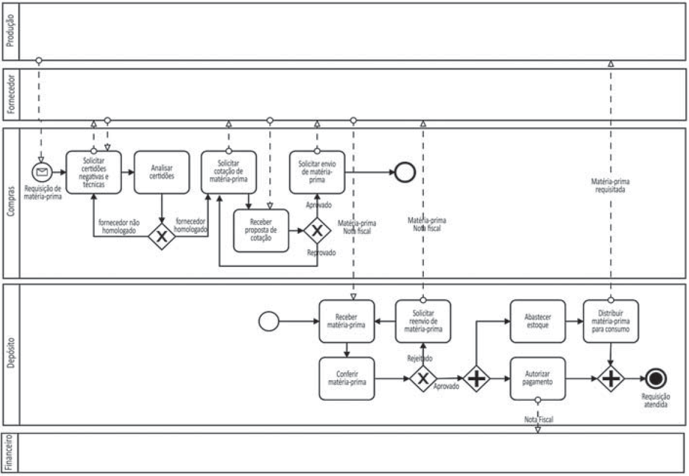

O diagrama a seguir, em notação BPMN (Business Process Management Notation), representa graficamente
o processo de aquisição de matéria-prima de uma indústria, no qual apresenta-se o fluxo de trabalho entre
seus setores e fornecedores. Destaca-se que, para atender normas de responsabilidade socioambiental,
a indústria trabalha somente com fornecedores homologados, ou seja, que cumprem requisitos técnicos
e legais.

Com base nessa situação e no processo representado, avalie as afirmações a seguir.
-
O abastecimento do estoque e a autorização do pagamento ao fornecedor dependem da aprovação
resultante da conferência do material entregue no depósito.
-
Somente depois de se distribuir a matéria-prima ao setor requisitante é que a autorização do
pagamento será realizada.
-
No diagrama, são representados cinco momentos de decisão que, conforme seu resultado,
estabelecem caminhos diferentes de prosseguimento do fluxo de atividades.
-
A nota fiscal será recebida pelo depósito junto com a matéria-prima e será repassada ao financeiro
somente depois da aprovação dessa matéria-prima.
-
O processo seria otimizado se fosse criado e mantido um cadastro de fornecedores homologados
para se evitar a repetição das tarefas a cada requisição; com isso, somente novos fornecedores
exigiriam a execução de atividades de homologação.
É correto apenas o que se afirma em
- I, II e III.
- I, III e IV.
- I, IV e V.
- II, III e V
- II, IV e V